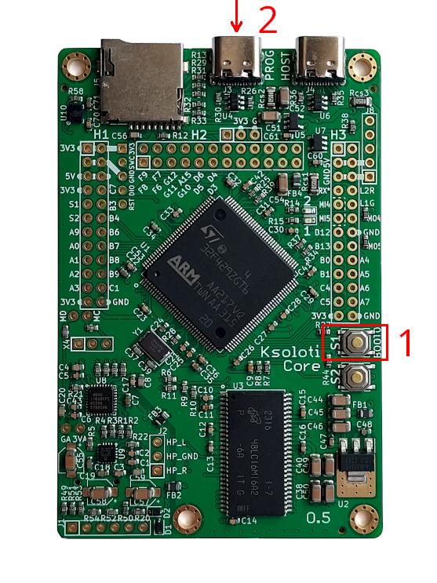
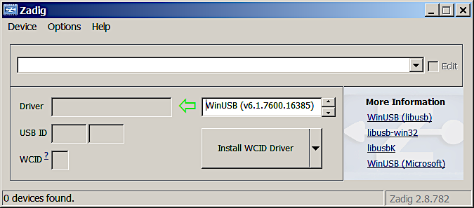
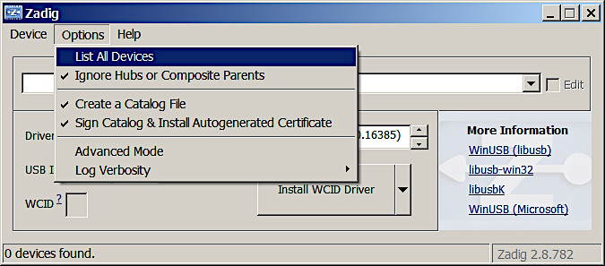
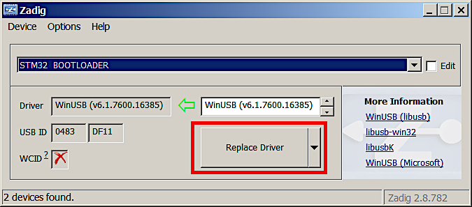
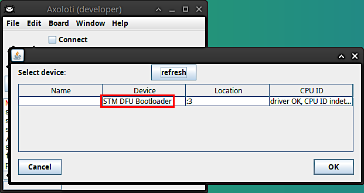
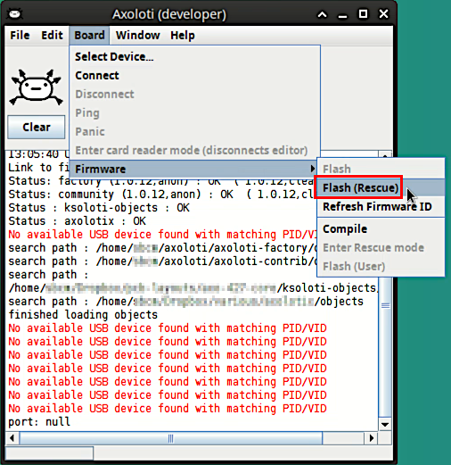
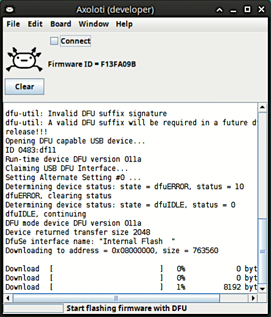
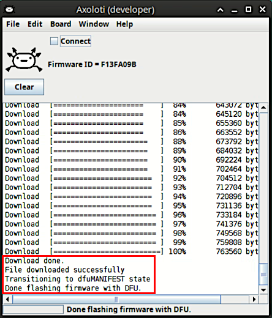

3.4. Rescue Mode
There might be a time when your Ksoloti will appear "bricked". Its LEDs may not light when you connect it, or they do light up but the Patcher cannot detect it. Enter rescue mode!
Usually you can update the Axoloti/Ksoloti firmware using the regular flashing method via Board > Firmware > Flash. If, however, your board does not respond to normal firmware flashing, Rescue mode (aka DFU mode) can be used to reset it. Although this is a rare situation, it can still happen if you accidentally unplugged your board while it was being flashed or loading a patch, or if you flashed a corrupted patch or modified the firmware. Most users will not need this function but it may still be good to know about it.
On Ksoloti Gills, switches S1 and S2 under the display correspond to the same switches on the Core. In other words, press S1 on your Gills while powering up to enter Rescue mode.
On Ksoloti Big Genes, the left and right Encoder push buttons (logically named E1/S1 and E2/S2) correspond to the same switches on the Core. In other words, push down the left Encoder on your Big Genes while powering up to enter Rescue mode.
Note: If you built a custom case you might have to open it to access switch S1 on the Core board. It is a good idea to include two (normally open) buttons in your design and connect them to pins S1 and S2 on header H1. The other terminal of the switch goes to 3.3V. The buttons have a 10k pulldown resistor installed on the Core. They can be used like regular buttons to control your patch, with the added benefit that you can invoke Rescue mode during boot. By the way, holding the second button, S2, during boot will cause your Axoloti/Ksoloti to skip auto-loading the current startup patch both in internal memory and on SD card.
-
Enter rescue mode by pressing and holding S1 while powering up the board. The two LEDs stay off in this case.
 - If you're NOT on Windows, skip right to step 5.
- If you're on Windows, start the Ksoloti Patcher and select Board > Select Device... If you see an entry like "STM DFU Bootloader", the Core in Rescue mode is being recognized and we don't need to do the driver replacement below. Close the device select window by pressing "Cancel" or the "x" button in the title frame (the OK button is greyed out - this is normal). Skip right to step 5.
-
On Windows, the driver installed by default (STM32 Bootloader) is not compatible. We need to replace it with the generic WinUSB driver using Zadig. Note that you usually only have to do this process once, not every time a Core in Rescue mode is connected. The process is about the same as in the outdated Windows install guide:
- When the Ksoloti Core in Rescue mode is connected, Windows will start installing the incompatible driver. Wait for this to complete.
- After Windows is done and shows "the device is now ready" (which it isn't), run Zadig.
-
Initially, the Zadig selection window is blank.

-
Select Options > List All Devices.

-
While the Ksoloti board is in Rescue mode, it will be listed as STM32 BOOTLOADER in the dropdown menu - select it. Under it you will see a dropdown saying Driver : (something) <- WinUSB (v6.1.7600.16385) or similar. Press Replace Driver to replace the incompatible STM driver with the working WinUSB driver.

-
If everything went well the Patcher will now detect the Ksoloti Core in Rescue mode. You can confirm that this mode is available by starting the Patcher and going to Board > Select Device... There will be an entry saying STM DFU BOOTLOADER in the device description, followed by driver OK, CPU ID (something) or similar. Close the device select window by pressing "Cancel" or the "x" button in the title frame (the OK button is greyed out - this is normal).

-
The menu option Board > Firmware > Flash (Rescue) should be enabled now - select it.
The patcher will begin uploading the firmware via DFU. The process is much slower than the normal firmware update - it takes a few minutes.When flashing is done, the Core will reboot automatically. Wait for the characteristic blinking sequence and until only the green LED is lit.
- That's it, you're done! You should be able to connect and run patches again.